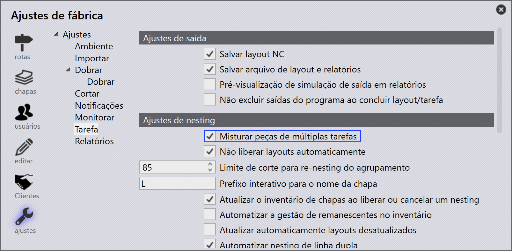
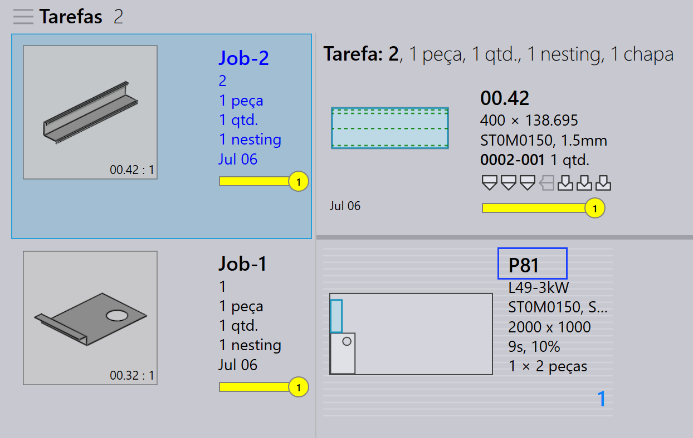
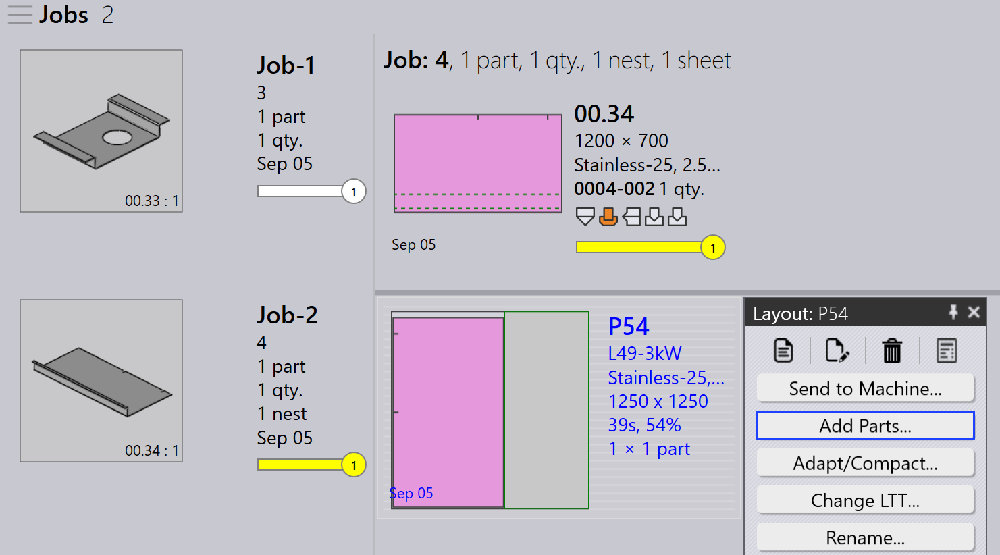
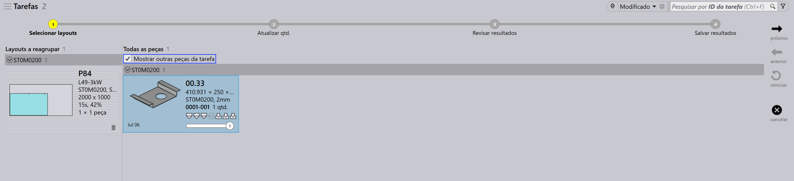
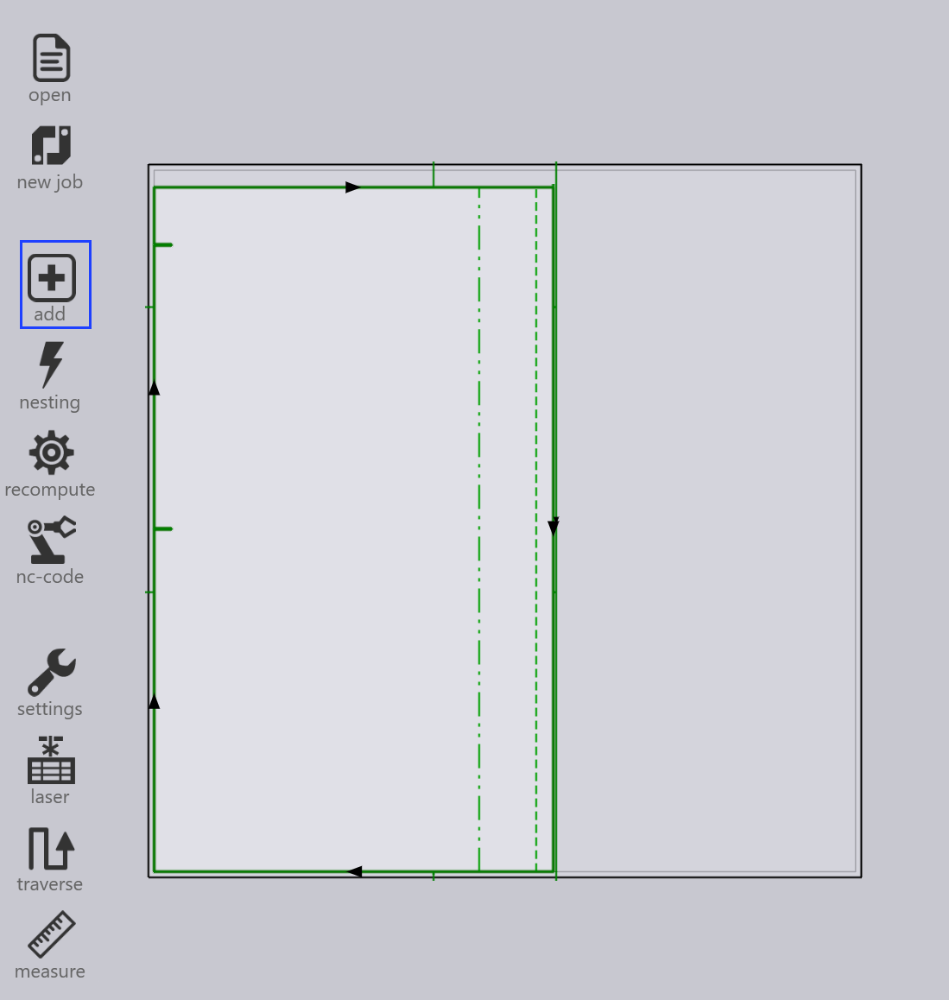
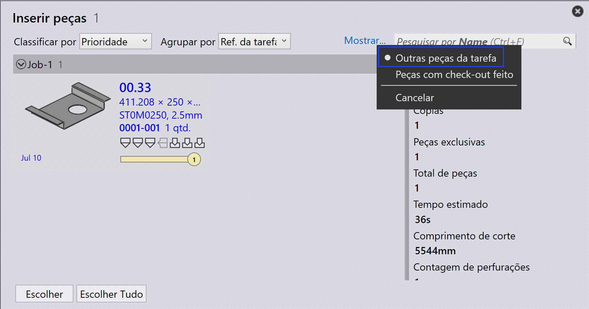

Reempacotamento
O TruSmartCAM não possui um módulo separado de Reempacotamento. Em vez disso, o reempacotamento é tratado por meio de opções em nível de tarefa que oferecem flexibilidade na forma como as peças são combinadas.
Existem três formas pelas quais o reempacotamento pode ser realizado.
-
Reempacotamento com Misturar peças de múltiplas tarefas.
-
Reempacotamento manual usando o Assistente Interativo Adicionar peças….
-
Reempacotamento manual usando TecZone.
Reempacotamento com Misturar peças de múltiplas tarefas
-
Para habilitar esta opção, vá em fábrica → ajustes → Tarefa → Ajustes de nesting → Misturar peças de múltiplas tarefas.

-
Quando habilitada, esta opção permite que peças de diferentes tarefas sejam agrupadas durante o nesting automático ou nesting interativo, resultando em um empacotamento ou nesting combinado.
-
Por exemplo: •Job-1 tem 1 peça, Job-2 tem 1 peça. •Com Misturar peças de múltiplas tarefas habilitado, o TruSmartCAM pode reempacotar essas 2 peças em um único nesting otimizado.

-
Sem esta opção, peças de cada tarefa permanecem separadas durante o nesting/empacotamento com nomes de layout diferentes.
-
O reempacotamento também pode ser realizado manualmente sem habilitar esta opção.
Reempacotamento manual usando o assistente interativo de adicionar peças
-
Na visualização de layout, selecione as peças que deseja reempacotar.
-
Clique com o botão direito na peça e escolha Adicionar peças… no painel de layout.

-
Siga as instruções no assistente para concluir o processo de reempacotamento.
-
Escolha Mostrar outras peças da tarefa e adicione-as à tarefa atual.

-
Revise as alterações e confirme o reempacotamento.

Para mais detalhes, consulte Add Parts.
Reempacotamento manual usando TecZone
-
Abra o TecZone clicando em
 .
.

-
Na interface do TecZone, clique em Add.

-
Uma nova janela aparece onde você pode selecionar as peças a serem reempacotadas. Clique em Mostrar… e selecione Outras peças da tarefa. Após fazer sua seleção, clique em _Escolher.

-
Uma nova janela aparece onde você pode definir onde a peça precisa ser reempacotada.

-
Clique em Salvar alterações no Praxis e o layout reempacotado estará disponível no TruSmartCAM.